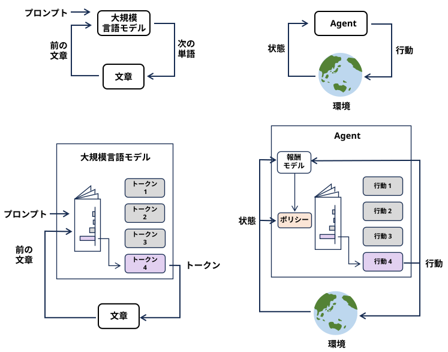

『Decision Transformer: Reinforcement Learning via Sequence Modeling』 (NeurIPS 2021)
『Trajectory Transformer』 (ICML 2021)
『ReAct: Synergizing Reasoning and Acting in Language Models』 (2022)
LLMに「思考（Thought）」と外部ツールへの「行動（Action）」を交互に出力させるフレームワークを提案しました。
この論文によって「環境の状況を観察（Observation）し、次の行動を決定する」というマルコフ意思決定過程（MDP）におけるエージェントとしての基礎が確立されました。
『Voyager: An Open-Ended Embodied Agent with Large Language Models』 (2023)
人気ゲーム『Minecraft』内で、LLMエージェントを自律的に探索・学習させた。
外部の「コードベースの行動（スキル）」を自ら書き換えてメモリに保存し、ゲームの進捗（報酬）を最大化するように自己改善を繰り返す、完全に自律的なRLループ（Curriculum Agent）の有効性を実証した。
『Large Language Models Are Semi-Parametric Reinforcement Learning Agents』 (NeurIPS 2023)
最大の功績は、「LLMの重み（パラメータ）を一切更新（ファインチューニング）せずに、強化学習（RL）によってエージェントを自己進化させる」という新しいパラダイムを提示した点にあります。
※ LLM自体は「固定された推論エンジン」として扱い、環境から得られた報酬（スコア）を使って「過去の経験データに付与する価値スコア（Q値）」を書き換える。
巨大なLLMをタスクごとにファインチューニングするのはコストが膨大で、かつ元の言語能力が壊れる「破滅的忘却」のリスクがありました。
「複雑で長期的なWebタスクやシミュレータ環境で、LLMを直接POMDP（部分的観測マルコフ意思決定過程）のエージェントとして学習させる」パラダイムへと進化しています。
『AgentGym / AgentGym-RL: Training LLM Agents for Long-Horizon Decision Making』 (2025)
さまざまなWeb環境やツール、コーディングタスクなど、マルチターン（複数ステップ）の意思決定が必要な環境を集めたプラットフォームと、そこでの強化学習アルゴリズムを提示。
従来の単発の質問応答（シングルステップMDP）ではなく、長期間にわたる意思決定を評価・訓練できる標準的な「ジム」を提供し、小規模なモデル（7Bなど）でも強化学習によってGPT-4oを凌駕するエージェント能力を身につけられることを実証しました。